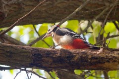
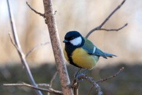
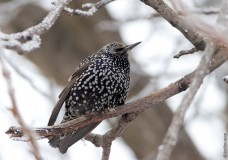
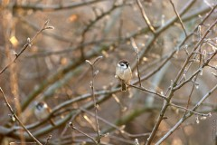
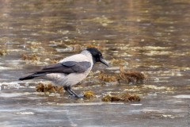
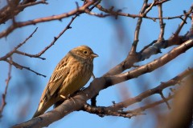
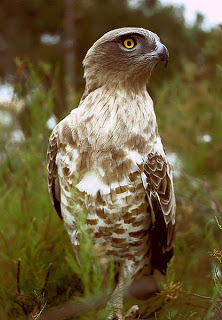

Багатий пернатий світ регіону свого часу став основним приводом для організації так званих Карпатських заповідників,
зі створення яких і почався відлік історії "Крилатої Варти".Наша заповідна зона призначена для збереження і відновлення найбільш цінних природних комплексів,
генофонду рослинного і тваринного світу. Ми робимо все для того, щоб захистити червонокнижних птахів від зникнення!
Інтерактивна карта-путівник - незамінний помічник у подорожах
GPS-навігація
Ваше точне місце розташування на карті "Крилатої Варти" допоможе самостійно досліджувати всю територію заповідника й не загубитись
Інтерактивна карта
Пам'ятки, зупинки транспорту, автостоянки, готелі, природні та історичні об'єкти – все це чекає на вас на карті
Ваш мобільний гід
Додаток містить у собі докладні ілюстровані розповіді про всі цікаві об'єкти, які ви зустрінете в "Крилатій Варті"
Пернаті Вартові Карпат
Найбільшу чисельність серед тварин складають птахи. Їх тут більше, ніж 200 видів - найрізноманітніших, від звичних нам синиць і горобців, до рідкісних видів, які зустрічаються лише тут,
і підлягають охороні. У будь-яку пору року і у будь-який час доби, прогулюючись по Карпатах, ви неодмінно зустрінете безліч її пернатих мешканців. У теплі сонячні дні ліси наповнюються співом птахів.
Тут їх дуже багато, і в кожної – своя пісня. Навіть взимку в балках і лісах вам обов'язково зустрінуться різні птахи – багато з них перелітні в інших областях, але тут вони залишаються зимувати.
     
Що відвідати в заповіднику
Музей природи
Кіно про птахів
Дикі стежки заповіднику
Цікавий факт

Змієїд - Рідкісний
Зустрічається в Українських Карпатах і Кримських горах. Дуже рідкісний вид. Чисельність української популяції стала поступово зменшуватися ще у середині ХХ ст. Станом на 2000 р. вона була оцінена в 30—40 пар.